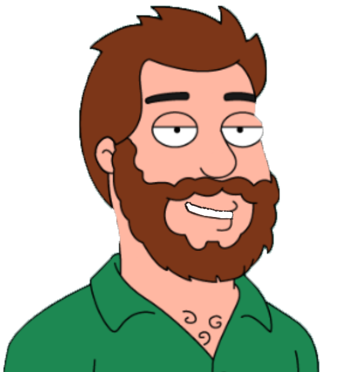

-Привет, я Андрей. Рад знакомству, это моё логово.
Что бы тебе хотелось узнать?
Что бы тебе хотелось узнать?
- Оу, сразу к делу, быстро ты.
- Вёрстка:
- ПопАпка - Bootstrap Modal;
- Слайдер - Owl Carousel 2;
- Галлерея - Fancybox;
Чаще всего использую Bootstrap4 + SASS;
Весь функционал зависит от тех.задания, но, в большинстве своём, это:
Про вёрстку здесь
- Очевидно, что, будущее за различными JS - фреймфорками, если говорить о Front-End.
Используя различные обучалки (codeacademy, youtube etc.) и читая документацию, изучил синтаксис React.JS и Vue.Js, но, к сожалению, не участвовал в реальных проектах с использованием этих Фреймворков (очень хотелось бы).
Также знаком(немного) с :
- PHP,
- MySQL
- Smarty Templater
- Ну-и какая вёрстка, да-и вообще работа, без Photoshop и MSOffice(и т.п.)
- Есть опыт работы со Scrum-проектами. В процессе работы использовались:
- Сборщик(Gulp+WebPack) использовался по минимуму: для компиляции SASS, минификации JS, сжатия картинок.
- Очевидно, что, будущее за различными JS - фреймфорками, если говорить о Front-End.
Используя различные обучалки (codeacademy, youtube etc.) и читая документацию, изучил синтаксис React.JS и Vue.Js, но, к сожалению, не участвовал в реальных проектах с использованием этих Фреймворков (очень хотелось бы).
Также знаком(немного) с :
- PHP,
- MySQL
- Smarty Templater
- Ну-и какая вёрстка, да-и вообще работа, без Photoshop и MSOffice(и т.п.)
- Есть опыт работы со Scrum-проектами. В процессе работы использовались:
- Trello
- RedMine
- Jira
- Сборщик(Gulp+WebPack) использовался по минимуму: для компиляции SASS, минификации JS, сжатия картинок.
- Найти меня непросто невозможно забыть и легко потерять
- Самый верный способ - мыло с верёвкой
- Можно попробовать пообщаться через социалки:
LinkedIn
Лицокнига
СетьДурова
- Детство - первые 19 лет, жил в Кишинёве, Репаблик оф Молдова. Собрался с мыслями потупил-потупил и поступил в Одессу.
Долго и упорно грыз бередил Альма-матер Одессы - Политех.
В 16-ом году добередился до Магистра мироздания Прикладной Математики.
Летом 2016 попал в "Univer-mag". Работал, по большей степени с лендами. Копирование, вёрстка, "шлифовка", скрипты на JS и jQ, всё было, было круто. Ближе к зиме 17-ого покинул эту "колыбель" лендов.
Удалёнка, удалёнка, удалёнка...
Готов приобщаться к новому
Сейчас живу в Кишинёве. Gl & Cya.
Долго и упорно грыз бередил Альма-матер Одессы - Политех.
В 16-ом году добередился до Магистра мироздания Прикладной Математики.
Летом 2016 попал в "Univer-mag". Работал, по большей степени с лендами. Копирование, вёрстка, "шлифовка", скрипты на JS и jQ, всё было, было круто. Ближе к зиме 17-ого покинул эту "колыбель" лендов.
Удалёнка, удалёнка, удалёнка...
Готов приобщаться к новому
Сейчас живу в Кишинёве. Gl & Cya.
*Сразу к делу, спрошу про skillz'ы*
- Ну, привет, Андрей. А что ты умеешь?
*Чет маловато, может, еще чет знает, неплох ведь*
- Наша компания развивается во многих направлениях, с чем еще знаком и хотел бы поработать?
*Понятно, над взять контакты, может, тестовое сделает*
- Хорошо, мы бы хотели связаться с вами чтобы вы подтвердили свои знания, не хотите ли сделать тестовое задание / приехать на собеседование
*Хорошо излагает. Че там опыту и вышке*
- Где ты работал, учился?